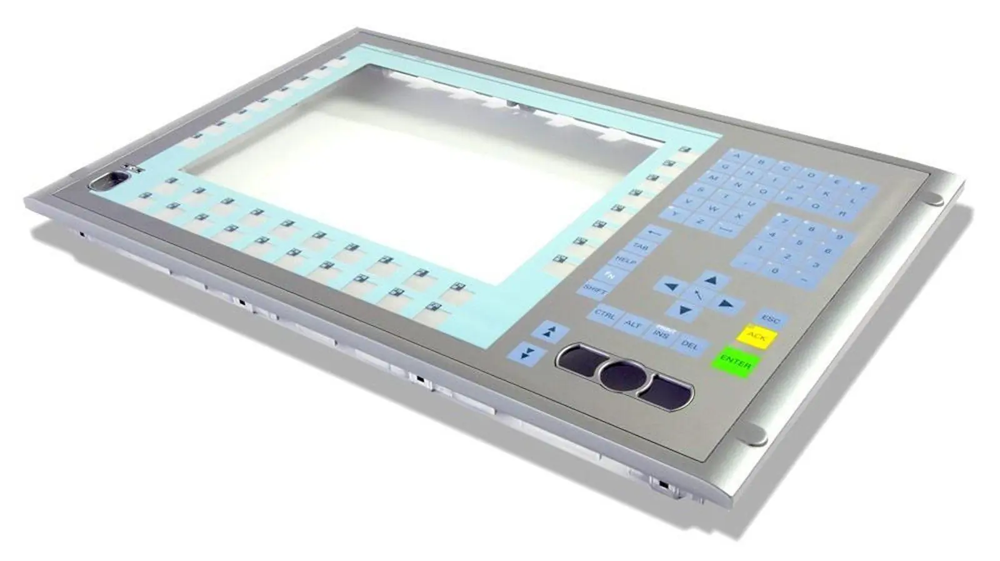

Industrie · Matières
Le Lexan®, pour vos claviers et faces avant
Le Lexan® est un film en polycarbonate. Chez PIM, il devient face décor de clavier à membrane, face avant plastique ou étiquette, sérigraphié et découpé sur mesure à Marckolsheim.
Ce que c’est
Lexan® est une marque de film en polycarbonate. Dans l’industrie, le mot est passé dans le langage courant : on parle de « clavier Lexan » pour un clavier plat, ou de « Lexan » pour la face décor sérigraphiée d’un appareil.
Le polycarbonate fait partie de nos matières de base, avec le polyester. Nos premières sérigraphies sur polyester datent de 1972, nos premiers claviers à membrane plats de 1980.
Ce que nous en faisons
La face décor des claviers à membrane. Sur un clavier à membrane, le film du dessus porte le décor, les symboles et les fenêtres. Il est en polycarbonate (Lexan®) ou en polyester, à partir de 0,5 mm d’épaisseur pour le clavier complet, étanche IP65 en standard.
Les faces avant plastique. Une face avant en polycarbonate est sérigraphiée, découpée à la forme et adhésivée au dos. Dès 150 µm, elle reçoit des reliefs (cloquage, guide-doigt) et des fenêtres pour un afficheur ou des voyants.
Les étiquettes et les circuits. Le polycarbonate sert aussi de support aux étiquettes plastique et, avec une encre argent, aux circuits souples et à l’électronique imprimée.
Lexan® ou polyester ?
Les deux films se sérigraphient et se découpent dans notre atelier. Le choix se fait selon votre cahier des charges : aspect et tenue de la façade, sollicitation des touches, produits de nettoyage, températures d’usage ou exposition à l’extérieur.
Nous faisons ce choix avec vous dès l’étape de conseil, puis nous le validons sur un prototype avant de lancer la série. Si le procédé n’est pas encore choisi, c’est justement le bon moment pour nous appeler.


Comment nous le travaillons
Du film au décor fini.
Sérigraphie. Les couleurs Pantone, RAL ou NCS sont mesurées au spectromètre, et les écrans sont faits sur place, sur notre CTS. La sérigraphie dépose une couche d’encre épaisse, qui tient dans le temps. Pour quelques pièces ou un décor à tester, l’impression numérique prend le relais.
Découpe. Nos lasers découpent le plastique avec une tolérance inférieure à ± 0,3 mm ; pour les séries, presses et outils prennent le relais.
Relief et assemblage. Gaufrage à chaud ou à froid, adhésifs, assemblage des couches du clavier, pose de LED ou de composants CMS.
Contrôle. Chaque clavier est testé électriquement puis contrôlé visuellement avant expédition, dans le cadre d’un système qualité certifié ISO 9001. Voir nos prestations.
Spécifications
En bref
Quantités et délais sont précisés au devis, selon la pièce et la série.
Fichiers acceptés avec la demande : PDF, DXF, DWG, AI, JPG ou PNG. Un mot technique vous échappe ? Le glossaire.
| Matière | Film polycarbonate (Lexan®) ; polyester en alternative |
|---|---|
| Produits | Face décor de clavier, face avant, étiquette, circuit souple |
| Épaisseur | Face avant dès 150 µm ; clavier à membrane dès 0,5 mm |
| Impression | Sérigraphie (Pantone, RAL, NCS) ou impression numérique |
| Découpe | Laser, tolérance inférieure à ± 0,3 mm ; presses pour les séries |
| Options | Fenêtres, reliefs, guide-doigt, adhésif au dos |
| Séries | Prototype, puis petite ou grande série |
| Quantité minimale | Sur devis |
Questions fréquentes
Le Lexan®, en pratique.
Les réponses aux questions qu’on nous pose le plus. Réponse à votre demande de devis sous 48 h ouvrées.
Qu’est-ce qu’un clavier Lexan ?
C’est le nom courant du clavier plat : un clavier à membrane dont la face décor est en polycarbonate (Lexan®). Fin et résistant, il s’adapte à presque tous les supports.
Fabriquez-vous des faces avant en Lexan® sur mesure ?
Oui. Le film est sérigraphié, découpé à la forme et adhésivé au dos, avec fenêtres et reliefs si besoin. Forme, couleurs et marquage sont définis avec vous.
Quelle épaisseur pour un clavier en Lexan® ?
Nos claviers à membrane partent de 0,5 mm d’épaisseur ; une face avant seule peut partir de 150 µm. L’épaisseur finale dépend des couches et des options choisies.
Le clavier est-il étanche ?
Oui, tous nos claviers à membrane sont conçus étanches, IP65 en standard. Voir le clavier étanche.
Faites-vous des prototypes et des petites séries ?
Oui. Nous faisons un prototype, nous l’ajustons avec vous sur votre équipement, puis nous lançons la série, petite ou grande.
Que faut-il envoyer pour un devis ?
Un plan ou un croquis coté (PDF, DXF, DWG, AI, JPG ou PNG), les quantités et l’usage prévu. Nous répondons sous 48 h ouvrées.